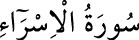

<a name=4374></a><br/>
<b>17-İSRÂ SÛRESİ</b><br/>
<i><b>İsra sûresi 101 âyettir. Mekke’de nâzil olmuştur. el-Kevâşî’de 76-80. âyetlerin</b></i><br/>
<i><b>Medine’de indiği veya 60, 72, 74, 80 ve 107. âyetlerin Medine’de indikleri söylenir.</b></i><br/>
